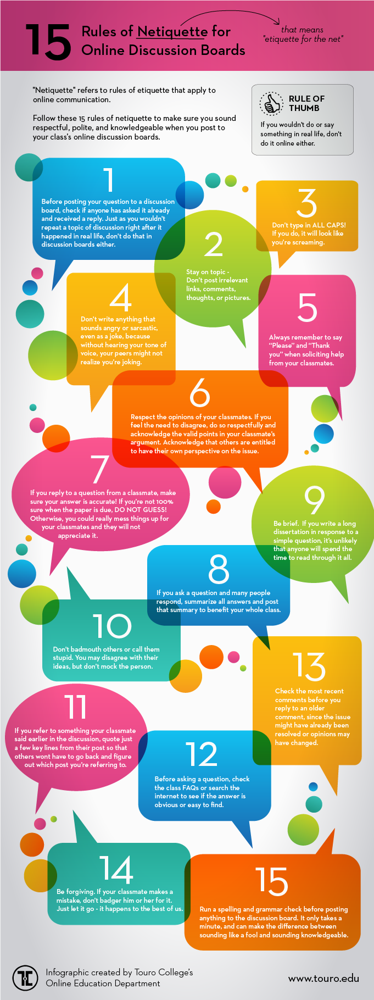

IDS 301: Problem Solving And Analysis with Python
Ursinus College, Spring 2023
Instructor: Christopher J. Tralie

Table Of Contents
Overview
Class Times / Locations
- Monday/Wednesday, 2:30-3:20PM, Pfahler 109
Student Office Hours
-
Monday/Wednesday 3:30PM - 5PM, Pfahler 109
-
Friday 10AM - 11AM, Pfahler 215 (Note the room change!)
-
Tuesday 7PM - 9PM virtually, by appointment (appointment e-mails will be send weekly on Monday nights)
Prerequisites/Requirements
No prior programming experience is assumed! People from all backgrounds with all levels of experience are welcome. As long as you have a laptop that was manufactured within the past 10 years, you will be able to do all of the assignments and participate in class. We will also go over all math as needed (high school algebra and trig will help).
Instructor
I grew up right around the corner in the Montgomery County and attended Upper Dublin High school (class of 2007). I then did my undergraduate degree in Electrical Engineering at Princeton University and my master's and Ph.D. degrees in Electrical And Computer Engineering at Duke University (heavily studying math and CS along the way). I finally started my dream job at Ursinus College in Fall of 2019! You can read more about my interests on my professional web site. Looking forward to getting to know everyone as we work through this course together!
Course Description
The Python programming language is an ideal entry point into computing for non-computer science students, with a low barrier to entry and extensive community support and development. This course will provide an introduction to Python for students with no prior programming experience. Students will learn basic programming paradigms in Python, such as variable manipulation, loops, and methods, but this will be in the service of myriad interdisciplinary applications in the sciences and digital humanities. For example, students will use Python to simulate motion of celestial bodies, simulate a pandemic, generate procedural fractal art, hide audio in images (so-called "steganography"), compare biological sequences, determine whether a movie review is positive or negative, align different performances of the same orchestral piece, and read 20,000 novels in seconds! The course will culminate in an individual project related to a question of interest to the student.
NOTE: This course satisfies the python requirement for the data science minor.
Learning Goals
- Learn the appropriate use of a programming language in the service of fundamental computational problems in the sciences in digital humanities.
- Gain comfort using libraries and online documentation to leverage work that other people have already done.
Learning Objectives
- Practice patient problem solving by developing comfort with the edit -> compile -> run loop, along with intermediate debugging skills.
- Develop data wrangling skills for multimedia data
- Implement basic machine learning algorithms from scratch
Technology Logistics
We will be using a zoo of technologies in the course, as has become standard in 21st century work environments. Below is a table summarizing what kinds of communications/activities occur via each technology, and below that there are more details on everything. This is admittedly complex, and it will take some getting used to, but it will be worth it once we get it nailed down.
NOTE: I will repeat the same announcements across e-mail and Discord, so you don't have to check all both for announcements.
| Class web site (You are here!) |
|
| Canvas |
|
| Discord |
|
| Microsoft Teams |
|
|
*: For privacy reasons, anything of a personal nature, and particularly things that have to with educational records (e.g. grades), need to be kept within Ursinus sanctioned platforms like Outlook e-mail and Microsoft Teams.
Canvas
We will be using Canvas, but only to submit assignments and to store all of the grades. I will also keep all of the due dates current on the calendar there, as students have appreciated this common space for all of their classes in the past.
Discord / Anonymous Questions
To facilitate informal, class-wide discussions about the class, as well as buddy group coding with screen sharing, we will have a Discord channel for the class. My goal is for this to turn into a flourishing area to work through confusion and to share ideas as a group.
Voltaire Anonymous Questions
All questions are welcome! To help break down the barrier of asking questions, we will be using the chat bot Voltaire so students can ask questions anonymously. This has worked very well in the past. To use Voltaire, send a direct message to the Voltaire bot with the following syntax:
where channel_name is the name of the channel you want to post to, and message is the text you want to send.
Other Rules
Do not send me direct messages or anything of a sensitive nature (e.g. grades) over Discord. Instead, use Microsoft Teams or e-mail for that, since those transactions are locked down better under Ursinus control.
Microsoft Teams
For one on one direct messages with me, and for buddy group coding with screen sharing, we will be using Microsoft Teams, which is linked to your Office suite through Ursinus, so you are automatically enrolled. This is an easy platform for students to initiate video sharing, so I highly recommend it for group work.
Readings
The official textbook for this course is CS For All, which is freely available on Harvey Mudd's web site.
Deliverables
Assignments
Homework will consist of a series of 8 mini assignments that students do in lockstep, followed by individual final projects of the students' choosing. It is encouraged that the students seek out other faculty on campus to provide ideas and/or data for the final project. By default, I can provide a few interesting but ``canned'' projects for students to work on.
Debugging Principles
If you're taking this course, then you've certainly had experience with debugging, but it is a skill you will still need to work on, so you should expect to hit some roadblocks. In fact, it is time consuming and difficult even for very experienced programmers. So do not be hard on yourself if your programs don't work the first time around (they rarely do, even if you've been programming for decades!).
I have had nearly 20 years of programming experience at this point, and I have learned the hard way what works and what doesn't. Here are my main debugging principles in a nutshell
- Leave yourself adequate time to work on the assignments, because the amount of time it takes to resolve issues can be unpredictable.
- Write small bits of code and test them right away. Don't write a wall of code and test it, only to find out that something doesn't work. By contrast, if you write bits at a time, you will know right away what code you wrote caused things to be wrong.
- Apply the scientific method: have in mind hypothesis for what might be wrong, design a quick experiment to test your hypothesis, draw conclusions, and repeat.
- Fail quickly. If you're working on a larger scale program that processes a lot of data, do not wait for several minutes for data to load every time you make a small change. Instead, come up with the minimum, simplest experiment you possibly can which will tell you whether your code is correct or not.
- Don't forget that you can write code to help you automate debugging. Otherwise, it's sometimes tedious to repeat the same steps over and over again as you're changing things.
- Know when to walk away. We often get stuck in loops wanting to resolve things, but then our logical thinking goes out the window and we start randomly trying different things. Even if you're up against the clock, it is often good to take a little break and come back again a little bit later.
Class Engagement / Pre-Class Work
It's easier to learn a difficult subject like digital music processing by going through a number of examples on each topic beyond the examples in the large assignments. Because of this, we will often do small programming exercises and experiments in class related to a topic that we're learning. At times, I may ask you to read over a description of an exercise or to read some notes about a new topic before class so we can go more deeply into the examples. I may also ask you to hand in something small related to the class exercises to make sure you were putting effort in during class. This will all make up a small part of your grade in the class.
Schedule
Outlined below is the schedule for the course, including lecture topics and assignment due dates. All assignments are due at 11:59PM on the date specified. The specific dates of different topics are subject to change based on the pace at which we go through the course.
| Lecture | Date | Lectures (click for notes) | Readings/Links | Assignments/Deliverables |
Unit 1: Audio/Image ProcessingWe will kick off the course by discussing how computers represent audio and images and by doing some fun manipulations of these signals. This will give us an excuse to start getting familiar with scientific Python, and particularly the numpy library. At this point in the course, we can mostly look at Python as a glorified calculator. Aside from basic arithmetic operations and plotting, we will dip our toes into writing functions, which will allow us to organize our code better when performing more complex tasks. Science Topics
Programming Topics
Libraries IntroducedTextbook ReadingHarvey Mudd CS For All Ch. 2 | ||||
| 1 | Wed 1/18/2023 | Course Sneak Preview | Homework 0: Warmup Out | |
| Sun 1/22/2023 | Homework 0 Due | |||
| 2 | Mon 1/23/2023 | Software Environment, Arithmetic Operations, Variable Naming |
| |
| 3 | Wed 1/25/2023 | Lists, Slicing, Numpy Arrays / Plotting |
| |
| Thu 1/26/2023 | Homework 1a: linspace and sinusoids | |||
| Sun 1/29/2023 | Homework 1a Due | |||
| 4 | Mon 1/30/2023 | Audio Processing: Sinusoids, Noise, Begin Methods | Homework 1: Audio Processing Out | |
| 5 | Wed 2/1/2023 | Methods, Echoes/Convolution, Comb Filters |
| |
| 6 | Mon 2/6/2023 | The Discrete Fourier Transform, Begin Image Processing | ||
| 7 | Wed 2/8/2023 | Image Processing: 2D Arrays / Grids, Moiré Patterns, Quantization/Dithering | Homework 1 Due | |
Unit 2: Particle SimulationsIn this unit, we will begin to explore some fundamental programming paradigms that will turn our computer into much more than a basic calculator. In particular, we will study "if/else" statements, which are decisions made at runtime. We will also begin loops, which will make it much easier to repeat the same code over and over again with minor variations. Both of these things will allow us to begin exploring some interesting applications, including fractal generation and simulations of celestial bodies. Science Topics
Programming Topics
Libraries Introduced | ||||
| 8 | Mon 2/13/2023 | If Statements |
| HW2a: Gregorian Leap Years Out |
| 9 | Wed 2/15/2023 | Boolean Statements, Begin Loops |
| |
| 10 | Mon 2/20/2023 | Estimating PI, While Loops: Epoch Time, The 10 Heads Problem | Homework 2a Due
HW2b: The Chaos Game Out | |
| Tue 2/21/2023 | Homework 3: N-Body Problem Out | |||
| 11 | Wed 2/22/2023 | VPython Animations, Euler Steps for Vector Simulations of Gravitation | ||
| 12 | Mon 2/27/2023 | Continue Gravitational Simulations / VPython | ||
| 13 | Wed 3/1/2023 | Work Session | ||
| Fri 3/3/2023 | Homework 2b Due | |||
| Fri 3/3/2023 | Homework 3 Due | |||
| Fri 3/3/2023 | Final Project Initial Proposal Due | |||
| -- | Mon 3/6/2023 | Spring Break | No IDS 301 Class. Enjoy the break! | |
| -- | Wed 3/8/2023 | Spring Break | No IDS 301 Class. Enjoy the break! | |
| 14 | Mon 3/13/2023 | Chaos: Binary Star Planet Simulation, The Logistic Map | Homework 4: Chaos Out | |
| 15 | Wed 3/15/2023 | Chaos game representation of a genetic sequence | ||
Unit 3: Data Wrangling / Data AnalysisIn this unit, we will learn how to gather and organize data in Python. This will include a brief foray into machine learning to discuss learning from examples, also known as supervised learning. We will use this to guess the genre of a clip of music, to figure out the sentiment of a movie review, and to automatically transcribe images of digits. Science Topics
Programming Concepts
Libraries Introduced | ||||
| 16 | Mon 3/20/2023 | Python Dictionaries, Pickling, Wrangling Twitter Data | Homework 4 Due | |
| 17 | Wed 3/22/2023 | Python Dictionaries, Pickling, Wrangling Twitter Data | ||
| Fri 3/24/2023 | Homework 5: Tweet Wrangling Out | |||
| 18 | Mon 3/27/2023 | High Dimensional Data: Pixel Image Embeddings, Audio Features, Dimension Reduction, Multidimensional Scaling |
| |
| 19 | Wed 3/29/2023 | Finish multidimensional scaling, argsort/argmin, dictionaries practice | ||
| Sun 4/2/2023 | Homework 5 Due | |||
| 20 | Mon 4/3/2023 | Nearest Neighbors, Digit Classification, Audio Genre Classification | ||
| 21 | Wed 4/5/2023 | Ridge Regression, Text Vectorization, Sparse Matrices | Homework 6: Movie Reviews Out | |
Unit 4: SequencesIn this unit, we will study algorithms that deal with sequences in text and audio. In doing so, we will solidify our understanding of functions and loops by exploring a class of algorithms known as dynamic programming algorithms, which are algorithms that cleverly reuse computation to run more efficiently. This will unlock a series of neat applications, including genome similarity search (aka what's my ancestry?) and audio synchronization (i.e. how to we line up two people singing the same song but at different rates?). After this, we will study Markov Chains and use them to create a program that synthesizes text in a particular style. As the most complex assignment yet, it will require the notion of a "class" (custom variable type with functions) to organize code effectively. Science Topics
Programming Concepts
Libraries Introduced | ||||
| 22 | Mon 4/10/2023 | Recursion, The Dynamic Programming Concept | ||
| 23 | Wed 4/12/2023 | Edit Distance |
| |
| 24 | Mon 4/17/2023 | Dynamic Programming Solutions To Edit Distance, Needleman-Wunsch | Homework 6 Due | |
| -- | Wed 4/19/2023 | COSA Day | No IDS 301 Class. Enjoy the break! | |
| 25 | Mon 4/24/2023 | Backtracing Alignment Tables, Dynamic Time Warping for Audio Alignment | ||
| 26 | Wed 4/26/2023 | Classes and Objects | ||
| 27 | Mon 5/1/2023 | Markov Chains on Letters | Homework 7 Due Homework 8: Markov Hybrids Out | |
| 28 | Wed 5/3/2023 | Markov Chains And N-Grams | ||
| Fri 5/5/2023 | Homework 8 Due | |||
| 29 | Mon 5/8/2023 | No class | ||
| Tue 5/9/2023 | Final Project Video / Slide Due | |||
| 30 | Wed 5/10/2023 | No class | Final Project Feedback Due | |
| Thu 5/11/2023 | Final Project Due | |||
Grading
Breakdown
| Class Engagement | 5% |
| Programming Assignments | 75% |
| Final Project | 20% |
Flexible Submission Policy
In the absence of accommodations or communication with me, all assignments are due at 11:59PM EST on the date(s) stated on the schedule. Students can turn in those assignments past the deadlines, and the scores will be adjusted as follows:
- -5% for work submitted between 1 minute - 6 hours late
- -10% for work submitted up to 12 hours late
- -15% for work submitted up to 24 hours late
- -25% for work submitted up to 48 hours late
- -40% for work submitted up to 96 hours late
- -50% for work submitted more than 96 hours late but before solutions are returned
Letter Grades
Letter grades will be assigned on the scale below at the end of the course.
|
|
|
|
|
Classroom Environment
Inclusive Environment
Computer science is a field that has historically been and continues to be steeped in inequalities. We have a double dose of this in digital music processing, since modern work in this area is adjacent to AI and machine learning, which themselves have added fuel to the fire.
Within class interactions, my goal is to foster a environment in which students across all axes of diversity feel welcome and valued, both by me and by their peers. Axes of diversity include, but are not limited to, age, background, beliefs, race, ethnicity, gender/gender identity/gender expression (feel free to tell me in person or over e-mail which pronouns I should use), national origin, religious affiliation, and sexual orientation. Discrimination of any form will not be tolerated.
A slightly more subtle thing that we want to watch out for in class is not to assume anything about others based on implicit biases. I have heard from quieter students at Ursinus from different backgrounds in the past that they sometimes feel their contributions aren't valued from their group members and that they're talked over during collaborations. So be mindful of this and be sure to curb this behavior in yourself if you notice it...this is something immediate you can to do help stem the leaky pipeline in our field.
.Furthermore, I want all students to feel comfortable expressing their opinions or confusion at any point in the course, as long as they do so respectfully. As I will stress over and over, being confused is an important part of the process of learning computer science. Learning computer science and struggling to grow is not always comfortable, but I want it to feel safe. In other words, I will regularly keep you at the boundary of your comfort zone with challenging, real-world assignments, but I want you to feel comfortable with me and your peers and respected as a learner during the process.
{kind=link}
Finally, I am aware that, particularly during the pandemic, there are a variety of factors that may make it difficult to perform at your best level in class. At Ursinus, we are fortunate to have quite a mix of students from different backgrounds, many of whom need to work part time, and an increasing number of whom are commuters and have family obligations. If you find yourself having difficulty performing at the level that you want and/or turning assignments in on time because of any of these issues, communicate with me, and we can come up with a solution together (I will gently reach out if I notice any slips even if you don't communicate). This is an exciting capstone course, and I want to work to keep your excitement alive, regardless of your personal circumstances. We will get you through the course as long as the lines of communication are open and we work together. You belong in CS!
Classroom Attendance And Etiquette
Students are expected to attend class in person. We're shooting for engagement over mere attendance; students are expected to be active in class exercises and to be fully invested in the class (i.e. no internet browsing). Students who are unable to attend class for significant reasons (whether isolation or quarantine for students who have received a positive test, those experiencing Covid-related symptoms while awaiting test results, or other issues that make it difficult to attend class) should work pro-actively to make up any class exercises that they missed. To help with this, I will do my best to put up Youtube videos from other instructors on topics that we cover.
Finally, students are expected to follow any college policy requiring mask wearing on campus, in addition to following any guidance faculty provide for their individual classes.Masks should be available in every academic building, if needed.
Maximizing Your Communal Experience
Here are ways students can maximize their experience as a class community, and which could lead to extra credit in certain situations.
- Helping to teach a student a topic during student office hours.
- Certain calls for participation in class
- Particularly helpful or insightful messages on Discord
- Finding mistakes in class notes or on the assigned homework
Discord Communication Policy
Since this is a class-wide communication, the following rules apply to online communication- Students are expected to be respectful and mindful of the classroom environment and inclusivity standards. They are equally applicable to a virtual environment as they are in class.
- Students are not permitted to publicly share direct answers or questions which might completely give away answers to any homework problems. When in doubt, send me a direct message.
- I will answer questions real time during any office hours that are virtual. Otherwise, I will make every attempt to respond within 24 hours on weekdays. I cannot be expected to respond at all on Saturdays or Sundays or outside of 10AM-8PM on weekdays, so plan accordingly. (Of course, students can and should still respond to each other outside of these intervals, when appropriate).
The points above are part of a more general term referred to as "netiquette." Refer to the chart below, provided by Touro College
Collaboration Policy
Overall Philosophy
The collaboration policy for this class walks the line between encouraging openness and collaboration during a challenging learning process, while also making sure that each students is progressing technically at an individual level without relying on 100% on other classmates. Communication between students is allowed (and encouraged!) on most assignments, but it is expected that every student's code or writeups will be completely distinct. Do not copy code off of the Internet. Cite any sources in addition to materials linked from the course website that you used to help in crafting your code and completing the assignment.
Assignment Buddies
To encourage collaboration, students will be allowed (not required) to choose one or more "buddies" to work "near" during the programming assignments. Students are still expected to submit their own solutions, but they are allowed to provide substantial help to each other, and even to look at each others' code during the process. Students should indicate their buddies in the README upon assignment submission. Let me know if you would like a buddy but are having trouble finding one.
Collaboration Scenarios Table
Below is a table spelling out in more detail when and how you are allowed to share code with people (table style cribbed from Princeton CS 126).
Click on each button below to view the collaboration parameters for individual and budd (group) assignments
Buddy/Group Assignment
| YOUR BUDDY |
COURSE STAFF |
CS 477 GRADS |
CLASS- MATES |
OTHER PEOPLE |
|
|---|---|---|---|---|---|
| DISCUSS CONCEPTS WITH: | ✔ | ✔ | ✔ | ✔ | ✔ |
| ACKNOWLEDGE COLLABORATION WITH: | ✔ | ✔ | ✔ | ✔ | ✔ |
| EXPOSE YOUR CODE/SOLUTIONS TO: | ✔ | ✔ | ✔ | ✘ | ✘ |
| VIEW THE CODE/SOLUTIONS OF: | ✔ | * | ✘ | ✘ | ✘ |
| COPY CODE/SOLUTIONS FROM: | ✘ | * | ✘ | ✘ | ✘ |
Individual Assignments
| YOUR BUDDY |
COURSE STAFF |
CS 477 GRADS |
CLASS- MATES |
OTHER PEOPLE |
|
|---|---|---|---|---|---|
| DISCUSS CONCEPTS WITH: | N/A | ✔ | ✘ | ✘ | ✘ |
| ACKNOWLEDGE COLLABORATION WITH: | N/A | ✔ | ✘ | ✘ | ✘ |
| EXPOSE YOUR CODE/SOLUTIONS TO: | N/A | ✔ | ✘ | ✘ | ✘ |
| VIEW THE CODE/SOLUTIONS OF: | N/A | * | ✘ | ✘ | ✘ |
| COPY CODE/SOLUTIONS FROM: | N/A | * | ✘ | ✘ | ✘ |
* You may view and copy code from class exercises and class resources without citing them, but you should not copy solutions from previous semesters that the instructor may have provided
NOTE: The terms "exposing" and "viewing" exclude sending or ingesting electronically, which would be considered copying. Exposing and viewing are normally done in the context of in-person working or in the help room. When students work remotely, what this means is that buddies can screen share as they are working through things, but they should not send code directly.
NOTE ALSO: "Other people" includes internet sources.
If the collaboration policy has been violated in any way, regardless of intent, then it may be an academic dishonesty case, and it will be referred to the Associate Dean for Academic Affairs. I am required to make this report in every occurrence, so it is best to speak with me first if there are any questions about the policy or expectations. You should feel free to have these conversations with me anytime prior to making your submission without fear of penalty.
On a more personal note, though a willful violation of academic honesty may seem merely transactional to a student, faculty take violations very personally, as they are disrespectful to the time and effort we put into our courses. I would also like to emphasize that your reputation is much more important than your grades. The recommendations we as faculty write go a long way, and we are much happier to write positive recommendations for students with lower grades who show grit and growth than we are to write recommendations for students with higher grades who have cheated.
Other Resources / Policies
Accommodations
In addition to our general awareness diversity, Ursinus College is also committed to providing reasonable accommodations to students with disabilities. Students with a disability should contact the Directory of Disability Services ASAP. Dolly Singley is located in the Center for Academic Support in the lower level of Myrin Library. Visit this link for more information on the process. I will do my best to accommodate your requests, and they will be kept completely confidential.
One on One Tutoring
One on one tutoring for up to two hours per week is available through the institute for student success. Click here to fill out a Qualtrics survey if you'd like to take advantage of this.
Let's Talk
Mental health care is increasingly recognized as a crucial service for the undergraduate population. Visit this link for more information about complementary counseling services provided by the college. The Wellness Center has a virtual drop-in crisis hour at 2-3 pm each weekday, which is available for students in crisis who need to be seen immediately by a clinician. If you are still hesitant to go, take me (Professor Tralie) as an example of someone who has benefited greatly from talk therapy and medication in the past. I am happy to discuss this in student office hours in more detail.
Beyond that, please have a look at this document for a variety of resources related to mental health at Ursinus.
Finally, be aware that there are resources outside of mental health care proper to address some core sources of mental stress and strain, such as time management and writing at the Institute for Student Success and the Center for Writing And Speaking.
Title IX
Title IX is a federal law, under which it is prohibited to discriminate on the basis of gender. The Title IX Coordinator is available to receive inquiries and to investigate allegations in this regard.
Inclement Weather Policy (aka COVID Policy)
In the event that the College closes due to inclement weather or other circumstances (such as a COVID lockdown), our in-person class sessions, drop-in student office hours, or other meetings will not be held. I will contact you regarding our plan with regard to rescheduling the class or the material, any assignments that are outstanding, and how we can move forward with the material (for example, any readings or remote discussions that we can apply). If necessary, I may schedule online virtual sessions in lieu of class sessions, and will contact you with information about how to participate in those. I will communicate this plan to the department so that it can be posted on my office door if it is feasible to do so. This policy and procedure will also apply in the event that the College remains open but travel conditions are hazardous or not otherwise conducive to holding class as normal. Should another exigent circumstance arise (for example, illness), I will follow this policy and procedure as well.